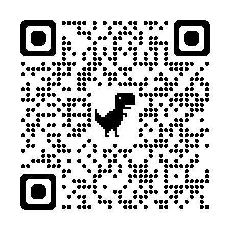

<!DOCTYPE html>
<html lang="zh-Hant">
<head>
  <meta charset="UTF-8">
  <meta name="viewport" content="width=device-width, initial-scale=1.0">
  <title>神經可塑性：在旅途中重塑</title>

  <!-- Google Fonts -->
  <link rel="preconnect" href="https://fonts.googleapis.com">
  <link rel="preconnect" href="https://fonts.gstatic.com" crossorigin>
  <link href="https://fonts.googleapis.com/css2?family=Noto+Serif+TC:wght@700&display=swap" rel="stylesheet">

  <!-- 品牌主題 -->
  <link rel="stylesheet" href="css/theme.css">
</head>
<body>

  <!-- ============================================================
       Sidebar：頁面導航列（按 S 鍵 toggle）
       ============================================================ -->
  <nav id="sidebar" class="sidebar">
    <div class="sidebar-inner" id="sidebar-list">
      <!-- JS 動態生成 -->
    </div>
  </nav>

  <!-- ============================================================
       主內容區：所有頁面 DOM 預先建好
       ============================================================ -->
  <main id="stage">
    <!-- JS 動態生成所有頁面 -->
  </main>

  <!-- 底部進度條 -->
  <div class="progress-bar">
    <div class="progress-bar-fill" id="progress-fill"></div>
  </div>

  <!-- QR Code 生成（本地備份） -->
  <script src="js/qrcode.min.js"></script>

  <!-- Supabase JS Client -->
  <script src="https://cdn.jsdelivr.net/npm/@supabase/supabase-js@2.49.4/dist/umd/supabase.min.js"></script>

  <!-- 專案腳本 -->
  <script src="js/supabase-config.js"></script>
  <script src="js/timer.js"></script>
  <script src="js/submissions.js"></script>

  <script>
    /**
     * 簡報 SPA 核心控制器
     * 純 HTML/CSS/JS，不依賴任何框架
     */
    (function () {
      'use strict';

      // ============================================================
      // 35 頁完整定義
      // ============================================================
      const PAGES = [
        // 開場
        { id: 'opening-eyes', type: 'timer', timer: 15, title: '請閉上眼睛', text: '請閉上眼睛。', section: '開場' },
        { id: 'cover', type: 'image', src: 'slides/01-cover.webp', title: '封面', section: '' },
        { id: 'book-intro', type: 'image', src: 'nerobook.jpg', title: '這本書', section: '' },
        { id: 'elephant-room', type: 'image', src: 'slides/slide_01.png', title: '房間裡的大象', section: '' },
        { id: 'opening-phone', type: 'text', title: '手機翻面', text: '把手機拿出來，看一下通知，\n然後翻面放在桌上。\n接下來 50 分鐘，試著不碰它。\n每次你想翻過來\n那就是你的大象。', section: '' },

        // 大象與騎象人
        { id: 'elephant-charge', type: 'image', src: 'slides/slide_02.png', title: '橫衝直撞的大象', section: '大象與騎象人' },
        { id: 'tired-rider', type: 'image', src: 'slides/slide_03.png', title: '疲憊的騎象人', section: '' },
        { id: 'habit-loop', type: 'image', src: 'slides/slide_04.png', title: '困在習慣迴圈', section: '' },
        { id: 'phone-cb-1', type: 'callback', title: '手機 Callback①', text: '順便問一下，\n剛才有人已經想翻手機了嗎？\n那就是 Cue → Routine → Reward\n正在運作。', section: '' },

        // 翻轉：神經可塑性
        { id: 'fire-wire', type: 'image', src: 'slides/slide_05.png', title: '神經可塑性', section: '神經可塑性' },
        { id: 'my-elephant', type: 'image', src: 'slides/slide_06.png', title: '命名你的大象', section: '' },

        // 呼吸過渡
        { id: 'breath-1', type: 'breathing', title: '呼吸', text: '你的大腦正在保護你。\n只是有時候，\n保護看起來像是困住。', section: '呼吸' },

        // 互動1：命名你的大象
        { id: 'qr-1', type: 'qr', title: 'QR 投稿', question: '寫下你的大象——最近有什麼念頭，你知道不該在意，但大腦就是停不下來？', questionId: '1', section: '互動' },
        { id: 'wall-1', type: 'wall', title: '投稿牆', questionId: '1', counterLabel: '個大象', section: '' },

        // 允許跑完 + 自我慈悲
        { id: 'self-compassion', type: 'image', src: 'slides/slide_07.png', title: '停止自我懲罰', section: '允許與慈悲' },

        // 拉開空隙
        { id: 'three-seconds', type: 'image', src: 'slides/slide_08.png', title: '拉開三秒空隙', section: '拉開空隙' },
        { id: 'frankl', type: 'quote', title: 'Frankl', text: '在刺激與反應之間，有一個空間。\n在那個空間裡，是我們選擇回應的力量。', section: '' },
        { id: 'software-update', type: 'image', src: 'slides/slide_09.png', title: '軟體更新', section: '' },
        { id: 'failure-is-learning', type: 'quote', title: '失敗的意義', text: '失敗是大腦認識世界跟自己的方式', section: '' },

        // 六次時間線
        { id: 'timeline', type: 'image', src: 'slides/v3-timeline.png', title: '六次演講時間線', section: '時間線' },
        { id: 'talk-7', type: 'quote', title: '第七次', text: '第七次。2026 年 4 月。現在。\n以前都講 10 分鐘，這次講 50 分鐘。\n\n有沒有緊張？有。\n會不會反芻？有可能。\n有沒有關係？沒有。', section: '' },

        // 互動2：兩人分享
        { id: 'sharing', type: 'timer', timer: 120, title: '兩人分享', text: '這 30 幾分鐘裡，\n你的大象叫了幾次？\n你怎麼處理的？\n跟旁邊的人聊聊。', section: '互動2' },
        { id: 'volunteer', type: 'text', title: '自願分享', text: '有沒有人願意\n跟大家分享？', section: '' },

        // 培植花卉
        { id: 'mental-rehearsal', type: 'image', src: 'slides/slide_10.png', title: '培植新的花卉', section: '培植花卉' },
        { id: 'brain-charge', type: 'text', title: '替大腦充電', text: '🏃 運動：30-45 分鐘中等強度有氧\nBDNF 增加 200-300%，大腦的肥料\n\n😴 睡眠：真正的神經重寫在你睡覺時發生\n白天標記，夜晚施工\n\n🧘 冥想：8 週就能產生可量測的灰質變化\n練的就是覺察——念頭跑了，拉回來', section: '' },

        // 呼吸過渡
        { id: 'breath-2', type: 'breathing', title: '呼吸', text: '你不需要一次轉完。\n只需要轉一度。', section: '呼吸' },
        { id: 'phone-cb-2', type: 'callback', title: '手機 Callback②', text: '你從開場到現在忍住沒碰手機\n恭喜，你已經在練習\n「在刺激和反應之間創造空間」了。', section: '' },

        // 承諾牆
        { id: 'one-degree', type: 'image', src: 'slides/slide_12.png', title: '轉向那一度', section: '收尾' },
        { id: 'qr-2', type: 'qr', title: '一度轉向', question: '你想轉的那一度是什麼？一個小到不可能失敗的動作。', questionId: '2', section: '' },
        { id: 'wall-2', type: 'wall', title: '承諾牆', questionId: '2', counterLabel: '個承諾', section: '' },

        // 收尾
        { id: 'closing-eyes', type: 'timer', timer: 15, title: '再次閉眼', text: '閉上眼睛。\n如果念頭跑出來，\n對它說：我看到你了。', section: '' },
        { id: 'closing', type: 'image', src: 'slides/slide_13.png', title: '擁抱不舒服', section: '' },
        { id: 'closing-text', type: 'quote', title: '結語', text: '讓我們一起，\n用這顆不斷改變的大腦，\n說一個好故事。', section: '' },
        { id: 'ending', type: 'text', title: '感謝', text: 'Josh / 人生鍛造所', section: '' },
      ];

      // 動態投稿 URL
      const SUBMIT_URL = location.origin + '/submit';
      const SUBMIT_URL_Q2 = location.origin + '/submit?q=2';

      // ============================================================
      // 目前頁碼（0-based）
      // ============================================================
      let currentIndex = 0;

      // ============================================================
      // 頁面 DOM 建構
      // ============================================================
      const stage = document.getElementById('stage');

      /**
       * 將含換行的文字轉成帶 <br> 的 HTML
       * 用 textContent 賦值後再替換，防 XSS
       */
      function textToHtml(str) {
        const temp = document.createElement('span');
        temp.textContent = str;
        return temp.innerHTML.replace(/\n/g, '<br>');
      }

      /**
       * 時間線頁的節點資料
       */
      const TIMELINE_NODES = [
        { label: 'Talk 1', sub: '反芻三天' },
        { label: 'Talk 2', sub: '反芻一兩天' },
        { label: 'Talk 3-5', sub: '搞懂了減法' },
        { label: 'Talk 6', sub: '從容面對' },
        { label: 'Talk 7', sub: '50 分鐘' },
      ];

      // 為每種頁面建構 DOM
      PAGES.forEach((page, index) => {
        const el = document.createElement('div');
        el.className = 'page';
        el.id = `page-${page.id}`;
        el.dataset.index = index;
        el.dataset.type = page.type;

        switch (page.type) {
          // ────────────────────────────
          // NLM 圖片頁
          // ────────────────────────────
          case 'image':
            el.classList.add('page-image');
            el.innerHTML = ``;
            break;

          // ────────────────────────────
          // 文字頁（手機翻面、自願分享等）
          // ────────────────────────────
          case 'text':
            el.classList.add('page-text');
            el.innerHTML = `
              <div class="text-content">
                <p>${textToHtml(page.text)}</p>
              </div>`;
            break;

          // ────────────────────────────
          // 故事頁
          // ────────────────────────────
          case 'story':
            el.classList.add('page-story');
            el.innerHTML = `
              <div class="story-block">
                <div class="story-quote-mark">\u201C</div>
                <div class="story-text">${textToHtml(page.text)}</div>
                <div class="story-decoration"></div>
              </div>`;
            break;

          // ────────────────────────────
          // 手機 Callback 頁
          // ────────────────────────────
          case 'callback':
            el.classList.add('page-callback');
            el.innerHTML = `
              <div class="callback-content">
                <p>${textToHtml(page.text)}</p>
              </div>`;
            break;

          // ────────────────────────────
          // 金句頁
          // ────────────────────────────
          case 'quote':
            el.classList.add('page-quote');
            el.innerHTML = `
              <div class="quote-decoration-top"></div>
              <p class="quote-text">${textToHtml(page.text)}</p>
              <div class="quote-decoration-bottom"></div>`;
            break;

          // ────────────────────────────
          // 呼吸過渡頁
          // ────────────────────────────
          case 'breathing':
            el.classList.add('page-breathing');
            el.innerHTML = `
              <div class="breathing-ring"></div>
              <p class="breathing-text">${textToHtml(page.text)}</p>`;
            break;

          // ────────────────────────────
          // 計時器頁
          // ────────────────────────────
          case 'timer':
            el.classList.add('page-timer');
            el.dataset.timer = page.timer;
            // 提示文字放在 timer 上方
            const timerTextHtml = page.text ? `<p class="timer-prompt">${textToHtml(page.text)}</p>` : '';
            el.innerHTML = `
              ${timerTextHtml}
              <div class="timer-container" data-duration="${page.timer}"></div>
              <div class="timer-hint">按空白鍵開始</div>`;
            break;

          // ────────────────────────────
          // QR Code 頁
          // ────────────────────────────
          case 'qr':
            el.classList.add('page-qr');
            const qrId = `qrcode-${page.questionId}`;
            const urlId = `qr-url-${page.questionId}`;
            el.innerHTML = `
              <p class="qr-question">${textToHtml(page.question)}</p>
              <div class="qr-wrapper" id="${qrId}"></div>
              <p class="qr-url" id="${urlId}"></p>`;
            break;

          // ────────────────────────────
          // 投稿牆頁
          // ────────────────────────────
          case 'wall':
            el.classList.add('page-wall');
            el.dataset.questionId = page.questionId;
            const wallId = `submission-wall-${page.questionId}`;
            const counterId = `submission-counter-${page.questionId}`;
            const wallQrId = `wall-qr-${page.questionId}`;
            el.innerHTML = `
              <div class="wall-header">
                <div class="wall-qr-mini">
                  <div class="wall-qr-canvas" id="${wallQrId}"></div>
                  <span class="wall-qr-label">還沒投稿？<br>掃我</span>
                </div>
                <div class="wall-counter">
                  <span class="wall-counter-number" id="${counterId}">0</span>
                  <span class="wall-counter-label">${page.counterLabel}</span>
                </div>
              </div>
              <div class="wall-grid" id="${wallId}"></div>`;
            break;

          // ────────────────────────────
          // 時間線頁
          // ────────────────────────────
          case 'timeline':
            el.classList.add('page-timeline');
            let nodesHtml = TIMELINE_NODES.map((n, i) => `
              <div class="tl-node ${i === TIMELINE_NODES.length - 1 ? 'tl-node-active' : ''}">
                <div class="tl-dot"></div>
                <span class="tl-label">${n.label}<br>${n.sub}</span>
              </div>`).join('');
            el.innerHTML = `
              <div class="tl-story">
                <p>從第一次到今天，六次站上台。<br>每次大象都來了，但每次牠待的時間都更短。</p>
              </div>
              <div class="tl-wrapper">
                <div class="tl-line"></div>
                <div class="tl-nodes">${nodesHtml}</div>
              </div>`;
            break;
        }

        stage.appendChild(el);
      });

      // 結尾頁加入 IG QR Code
      const endingContent = document.querySelector('#page-ending .text-content');
      if (endingContent) {
        endingContent.innerHTML += '';
      }

      // ============================================================
      // Sidebar 建構
      // ============================================================
      const sidebarList = document.getElementById('sidebar-list');
      let lastSection = '';

      PAGES.forEach((page, index) => {
        // 分站標記
        if (page.section && page.section !== lastSection) {
          lastSection = page.section;
          const sectionEl = document.createElement('div');
          sectionEl.className = 'sidebar-section';
          sectionEl.textContent = page.section;
          sidebarList.appendChild(sectionEl);
        }

        const item = document.createElement('div');
        item.className = 'sidebar-item';
        item.dataset.index = index;
        const numSpan = document.createElement('span');
        numSpan.className = 'sidebar-num';
        numSpan.textContent = index + 1;
        item.appendChild(numSpan);
        item.appendChild(document.createTextNode(' ' + page.title));
        item.addEventListener('click', () => goToPage(index));
        sidebarList.appendChild(item);
      });

      // ============================================================
      // 頁面切換核心
      // ============================================================
      const allPages = stage.querySelectorAll('.page');
      const sidebarItems = sidebarList.querySelectorAll('.sidebar-item');
      const progressFill = document.getElementById('progress-fill');

      function goToPage(index) {
        if (index < 0 || index >= PAGES.length) return;
        if (index === currentIndex) return;

        // 移除舊頁面 active
        allPages[currentIndex].classList.remove('active');
        sidebarItems.forEach(i => i.classList.remove('active'));

        currentIndex = index;

        // 啟用新頁面
        allPages[currentIndex].classList.add('active');

        // Sidebar 高亮
        const activeItem = sidebarList.querySelector(`.sidebar-item[data-index="${currentIndex}"]`);
        if (activeItem) {
          activeItem.classList.add('active');
          // 捲動到可見範圍
          activeItem.scrollIntoView({ block: 'nearest', behavior: 'smooth' });
        }

        // 進度條
        const progress = (currentIndex / (PAGES.length - 1)) * 100;
        progressFill.style.width = progress + '%';

        // 投稿牆管理
        handleWallActivation();
      }

      // 初始化第一頁
      allPages[0].classList.add('active');
      const firstSidebarItem = sidebarList.querySelector('.sidebar-item[data-index="0"]');
      if (firstSidebarItem) firstSidebarItem.classList.add('active');

      // ============================================================
      // 鍵盤狀態機
      // ============================================================
      /** 狀態：'navigation' | 'timer-active' */
      let keyboardState = 'navigation';
      let sidebarVisible = false;
      const sidebar = document.getElementById('sidebar');

      function toggleSidebar() {
        sidebarVisible = !sidebarVisible;
        sidebar.classList.toggle('open', sidebarVisible);
      }

      document.addEventListener('keydown', (e) => {
        // S 鍵：sidebar toggle（任何狀態都可用）
        if (e.code === 'KeyS' && !e.ctrlKey && !e.altKey && !e.metaKey) {
          e.preventDefault();
          toggleSidebar();
          return;
        }

        if (keyboardState === 'navigation') {
          // 方向鍵 / PageUp/PageDown 切頁
          if (['ArrowRight', 'ArrowDown', 'PageDown'].includes(e.code)) {
            e.preventDefault();
            goToPage(currentIndex + 1);
          } else if (['ArrowLeft', 'ArrowUp', 'PageUp'].includes(e.code)) {
            e.preventDefault();
            goToPage(currentIndex - 1);
          }
          // 空白鍵在計時器頁啟動計時器
          else if (e.code === 'Space') {
            e.preventDefault();
            const pageData = PAGES[currentIndex];
            if (pageData.type === 'timer') {
              presentationTimer.startFromPage(allPages[currentIndex], pageData.timer);
            }
          }
        } else if (keyboardState === 'timer-active') {
          // 方向鍵鎖定
          if (['ArrowRight', 'ArrowDown', 'ArrowLeft', 'ArrowUp', 'PageDown', 'PageUp'].includes(e.code)) {
            e.preventDefault();
            return;
          }
          // 空白鍵：暫停/繼續
          if (e.code === 'Space') {
            e.preventDefault();
            presentationTimer.togglePause();
          }
          // Escape：退出計時器回 navigation
          if (e.code === 'Escape') {
            e.preventDefault();
            presentationTimer.abort();
          }
        }
      });

      // 防止瀏覽器預設捲動（僅主舞台區，側欄保留捲動）
      stage.addEventListener('wheel', (e) => { e.preventDefault(); }, { passive: false });

      // 狀態機 API（供 timer.js 呼叫）
      window.setKeyboardState = function (state) {
        keyboardState = state;
      };

      // ============================================================
      // 計時器初始化
      // ============================================================
      presentationTimer.init();

      // ============================================================
      // QR Code 生成
      // ============================================================
      function generateQR(containerId, url, size = 220) {
        const container = document.getElementById(containerId);
        if (!container || container.children.length > 0) return;
        new QRCode(container, {
          text: url,
          width: size,
          height: size,
          colorDark: '#5C4033',
          colorLight: '#FFF8F0',
          correctLevel: QRCode.CorrectLevel.M
        });
      }

      // 主 QR 投稿頁（大）
      generateQR('qrcode-1', SUBMIT_URL);
      generateQR('qrcode-2', SUBMIT_URL_Q2);

      // 投稿牆 / 承諾牆 header 迷你 QR（給晚到的人隨時可掃）
      generateQR('wall-qr-1', SUBMIT_URL, 110);
      generateQR('wall-qr-2', SUBMIT_URL_Q2, 110);

      // 設定 URL 顯示文字
      const qrUrl1 = document.getElementById('qr-url-1');
      if (qrUrl1) qrUrl1.textContent = SUBMIT_URL;
      const qrUrl2 = document.getElementById('qr-url-2');
      if (qrUrl2) qrUrl2.textContent = SUBMIT_URL_Q2;

      // ============================================================
      // 投稿牆管理
      // ============================================================
      const wall1 = new SubmissionWall({
        questionId: '1',
        wallSelector: '#submission-wall-1',
        counterSelector: '#submission-counter-1',
        counterLabel: '個大象'
      });
      const wall2 = new SubmissionWall({
        questionId: '2',
        wallSelector: '#submission-wall-2',
        counterSelector: '#submission-counter-2',
        counterLabel: '個承諾'
      });

      let activeWall = null;

      function handleWallActivation() {
        const pageData = PAGES[currentIndex];

        if (pageData.type === 'wall' && pageData.questionId === '1') {
          if (activeWall !== wall1) {
            if (activeWall) activeWall.pause();  // 暫停，不銷毀
            wall1.init();  // 第一次 init，之後自動走 resume
            activeWall = wall1;
          }
        } else if (pageData.type === 'wall' && pageData.questionId === '2') {
          if (activeWall !== wall2) {
            if (activeWall) activeWall.pause();
            wall2.init();
            activeWall = wall2;
          }
        } else if (activeWall) {
          activeWall.pause();  // 離開投稿牆頁：暫停訂閱，保留 DOM
          activeWall = null;
        }
      }

    })();
  </script>

</body>
</html>
